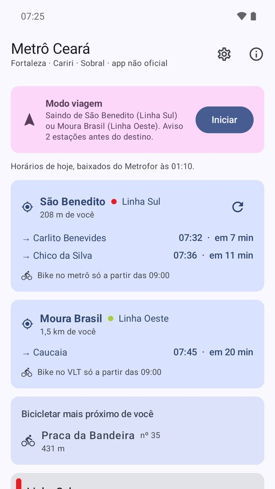
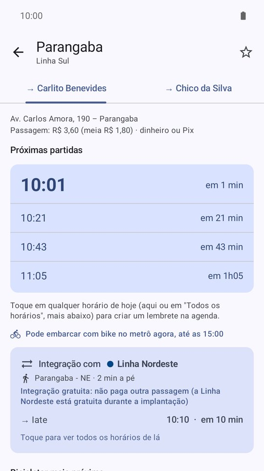
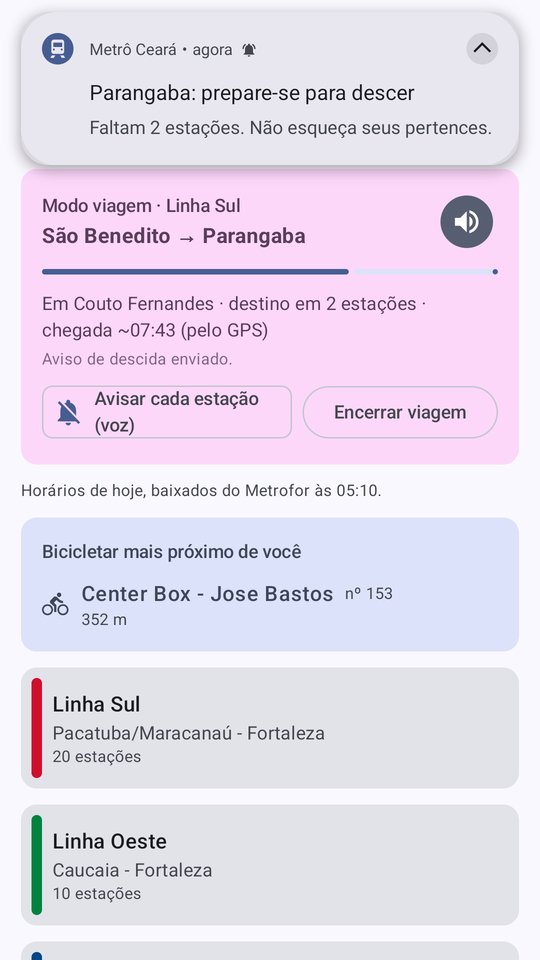

App não oficial. Feito por um passageiro, sem ligação com o Metrofor nem com o Governo do Ceará. Os horários são os que o próprio Metrofor publica.
O que o app faz
🚉 Próxima partida perto de você
Pelo GPS, mostra a estação mais próxima e quando sai o próximo metrô ou VLT, em cada sentido — e as outras linhas que passam por perto.
🔔 Modo viagem
Escolha o destino e guarde o celular: o app avisa duas estações antes de você descer, por notificação e voz, até com a tela desligada.
💺 Ir sentado
Perto do terminal, o app mostra como ir até ele e voltar sentado no mesmo metrô, e quanto tempo isso custa.
🔁 Integração entre linhas
Em Parangaba e Chico da Silva, mostra o próximo metrô ou VLT da outra linha que ainda dá para pegar, e se a integração é paga.
🚲 Bicicletar e bike no metrô
A estação do Bicicletar mais perto e se dá para levar a bike no metrô agora, pelas regras do Metrofor.
📅 Horários do dia
Baixa a grade do próprio dia — inclusive sábado e operação especial, como em dia de eleição. Sem internet, usa a última guardada.



É seguro?
- Código aberto (licença GPL-3.0): qualquer pessoa pode ver e conferir tudo o que o app faz, aqui no GitHub.
- Sem anúncios, sem cadastro, sem rastreadores.
- Sua localização fica no celular: é usada só para achar a estação mais perto e acompanhar a viagem. Nada é enviado para ninguém.
- A internet é usada só para baixar os horários publicados pelo Metrofor.
Como instalar o app completo (Android)
Quem só quer ver os horários não precisa instalar nada: abra no navegador. O app completo acrescenta o modo viagem, com aviso antes da sua estação mesmo com a tela desligada.
Na Play Store, o app está em fase de testes. Para ser testador beta e instalar pela loja, é só mandar um e-mail para giovanildos@gmail.com. Você recebe o convite e instala pela própria Play Store.
▶ Ver na Play StoreA página da loja abre só para quem já é testador.
No iPhone (versão lite)
No iPhone não dá para instalar o app de Android. A versão lite roda no navegador e fica com ícone na tela inicial:
- Abra giovanildo.github.io/metro-ceara-horarios/app no Safari.
- Toque em Compartilhar (o quadrado com a seta para cima; nas versões mais novas, ele fica dentro do botão •••).
- Toque em Adicionar à Tela de Início e depois em Adicionar.
- Abra pelo ícone e toque em Usar minha localização.
A versão lite mostra a estação mais perto, os horários, a integração entre linhas, a regra de bike e o lembrete da hora de sair, e abre até sem internet. O modo viagem, com aviso de descida com a tela desligada, existe só no app de Android.
Apoie
O app é gratuito e feito no tempo livre. Se ele te ajuda, você pode:
- Compartilhar este endereço com quem anda de metrô: giovanildo.github.io/metro-ceara-horarios
- Doar via Pix: giovanildos@gmail.com
- Sugerir melhorias ou avisar de problemas por aqui.